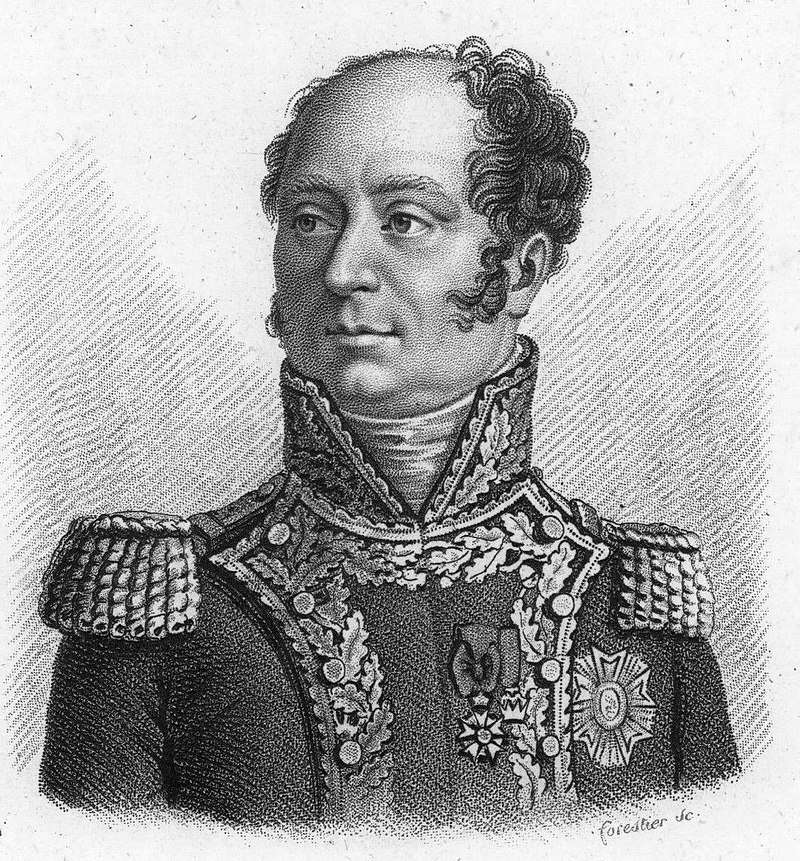
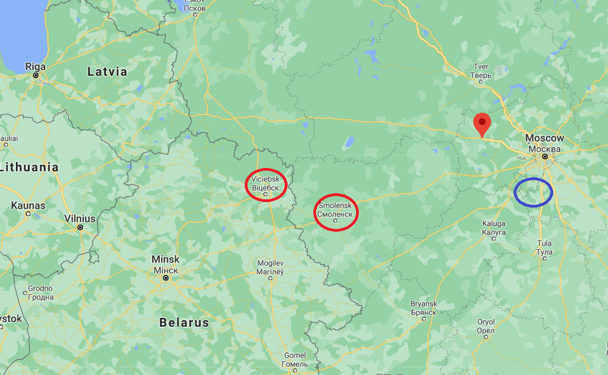

뻔한 길, 복잡한 길 - 모스크바 철수 계획 (2)
게시: 2021-04-12T06:30:55+09:00
후퇴를 할 때 가장 중요한 것은 어디로 후퇴하느냐였는데, 여기에 대해서는 아무런 이견이 없었습니다. 스몰렌스크였지요. 그 다음 문제는 '어디까지 후퇴하느냐'였는데, 스몰렌스크에서 겨울을 날지 혹은 빌나까지 아니면 민스크까지 후퇴할지는 일단은 중요하지 않았습니다. 스몰렌스크까지 빨리 가는 것이 무엇보다 중요했습니다. 그러나 1차 목적지를 정하고나니 실무적으로 그에 못지 않게 중요한 문제가 생겨났습니다. '어디 길로 가느냐' 하는 것이었습니다. 진격할 때는 이건 문제가 될 수 없는 부분이었습니다. 예카테리나 대제가 닦아놓은 모스크바-스몰렌스크 사이의 대로를 이용하면 되었으니까요. 그런데 이제 후퇴를 하려고 보니, 바로 1~2달 전에 왔던 길로 되돌아가는 것이 과연 현명한 생각인지가 의심스러웠습니다. 이 길로 진격해올 때 프랑스군은 그 일대를 그야말로 샅샅이 흝어먹었으므로 그 길 좌우는 정말 먹을 것이 씨가 마른 황무지가 되어 있었습니다. 가뜩이나 말이 없어서 후퇴하게 생긴 마당에 먹을 것을 잔뜩 싸들고 갈 수도 없었으므로, 그 길을 그대로 가는 것은 심각한 굶주림을 뜻했습니다. 나폴레옹은 스몰렌스크에 주둔한 수비대 사령관 딜리에르(Louis Baraguey d'Hilliers)에게 모스크바-스몰렌스크 대로의 좌우로 군대가 행군할 만한 다른 도로가 없는지 확인해보도록 지시했습니다.

(루이 딜리에르 장군입니다. 그는 하급 귀족 출신으로서 혁명 발발 5년 전에 장교로 임관했었는데, 다른 귀족들과는 달리 혁명 프랑스에 남기로 했습니다. 1793년에 마인츠 포위전에서 준장으로 승진할 때만 해도 그의 판단이 옳았던 것 같았는데, 그 이후로는 반혁명분자로 몰려 자주 투옥되었습니다. 그럼에도 복권되어 꿋꿋이 군 생활을 했고 나폴레옹을 따라 이집트에도 갔는데, 이집트로 가던 도중 말타 섬 점령의 전리품을 프랑스로 호송하라는 명령을 받고 회항하다가 이번에는 영국 해군에 나포되어 영국 감옥 밥도 맛보게 되었습니다. 나중에 보실 기회가 있겠습니다만, 나폴레옹의 명령에 따라 모스크바에서 후퇴하는 프랑스군을 마중하러 동진하다가 러시아군의 함정에 빠졌고, 이로 인해 나폴레옹의 눈 밖에 완전히 나게 됩니다. 불행의 연속이었지요. 그는 다음 해인 1813년 베를린에서 우울하게 죽습니다.) 그렇게 후툇길에서의 현지 보급 문제도 있었지만, 정치적인 문제도 후퇴 경로를 정하는데 고려해야 했습니다. 절대로 이 후퇴가 후퇴로 보여져서는 안되었던 것입니다. 그런 점을 생각하다보니 스몰렌스크로 직진하지 말고 차라리 상트 페체르부르그를 향해 진격하는 것도 고려하게 되었습니다. 즉, 모스크바 북서쪽 일대에서 활동하며 프랑스군의 파발마와 징발대를 요격하고 있던 빈칭게로더(Ferdinand von Wintzingerode)의 유격부대를 응징하기 위해 북서쪽으로 '진격'한다고 하면 적어도 대외적으로는 꽤 그럴싸 해보였습니다. 실제로 그 쪽으로 더 '진격'하다가 볼로콜람스크(Volokolamsk)를 거쳐 비텝스크(Vitebsk)에 주둔하고 있던 빅토르와 생 시르의 부대가 합류하여 상트 페체르부르그로 가는 길을 막고 있던 비트겐슈타인(Petr Christianovich Wittgenstein)의 부대를 공격할 수도 있고, 여의치 않으면 그냥 빌나로 직행할 수도 있었습니다. 무엇보다, 나폴레옹의 주력군이 북서쪽으로 움직이면 상트 페체르부르그의 알렉산드르가 움찔할 수 밖에 없었으니 그 심리적 효과도 괜찮을 것 같았습니다. 적어도 서류상에서는 매우 그럴싸 해보였습니다. 정반대로, 남서쪽의 쿠투조프 쪽으로 '진격'하는 것도 고려해볼 만 했습니다. 이건 누가 봐도 후퇴로 보이지 않을 움직임이었습니다. 그리고 후퇴할 때 쿠투조프가 뒤를 추격하면 모양새도 좋지 않고 까딱하다간 정말 패퇴로 이어질 수 있었으니 그 후환을 남기지 않기 위해 쿠투조프의 러시아군에게 한방 크게 먹여놓을 필요도 있었습니다. 혹시라도 거기서 러시아군을 궤멸시키기라도 하면 그야말로 좋은 일이었고, 혹시 러시아군이 또 회피하고 도망친다면 그것도 그것대로 나쁘지 않았습니다. 러시아군과의 사이에 안전거리를 확보하고 보무도 당당히 스몰렌스크로 향하면 되니까요.

(나폴레옹이 고려하고 있던 모스크바 일대의 거점들입니다. 모스크바 북서쪽에 구글 좌표 표시가 된 부분이 빈칭게로더를 치기 위해 통과해야 했던 볼로콜람스크(Volokolamsk)입니다. 그리고 모스크바 남쪽에 파란색 동그라미 표시가 된 곳이 쿠투조프가 주둔하고 있던 타루티노(Tarutino)입니다.) 그러나 조금만 더 생각해봐도 이건 다 심각한 단점이 내포된 계획들이었습니다. 모스크바 북서쪽은 원래부터 사람이 별로 많이 살지 않는 지역이라서 대군이 통과할 수 있는 지대가 아니었습니다. 기존 모스크바-스몰렌스크 대로변에는 그나마 프랑스군이 군데군데 보급창도 건설해놓고 경비대도 두고 있어서 충분한 것과는 전혀 거리가 멀었지만 식량과 안전이 조금은 있었으나, 볼로콜람스크 방면으로는 기동력을 자랑하는 빈칭게로더의 골치 아픈 유격부대만 있을 뿐 대군이 먹을 식량도 없었고 도로 사정도 좋지 않았을 뿐만 아니라, 결정적으로 더 멀리 우회하는 경로였습니다. 나폴레옹의 그랑다르메에겐 무엇보다 시간이 소중했는데, 이 길로 갔다가는 시간과 식량 모두가 손해였습니다. 쿠투조프를 치는 척 남쪽으로 가는 것도 문제가 있었습니다. 만약 쿠투조프와 싸운다면, 이기든 지든 거기서 서쪽 스몰렌스크로 향한다면 러시아인들이든 프랑스인들이든 유럽 동맹국들이든 '나폴레옹이 싸움에 패해 후퇴하고 있다'라고 생각하기 딱 좋았던 것입니다. 바로 최근의 보로디노 전투도 그랬습니다만, 당시 전투는 이기는 쪽이든 지는 쪽이든 많은 피해가 있기 마련이었습니다. 그래서 예나-아우어슈테트나 아우스테를리츠 같은 전투가 아니라면 누가 봐도 자명한 승리란 존재하지 않았고, 싸움터에서 물러나는 측이 패배한 것으로 인정되었습니다. 과거 아일라우 전투에서도 프랑스군의 피해가 더 컸지만 나폴레옹은 그 자리에서 버텼고 베니히센은 물러났기 때문에 나폴레옹이 승리를 주장한 바 있었습니다. 그런데 나폴레옹이 전투 직후에 서둘러 서쪽으로 이동한다? 이건 양측의 사상자 숫자와 무관하게 패퇴로 인식될 가능성이 매우, 매우 높았습니다. 나폴레옹은 철수를 결정하면서 철수 개시 날짜를 10월 19일로 정한 바 있었습니다. 그러나 막상 계획을 짜다보니 이런저런 고려할 점이 너무 많다보니 결정을 내릴 수가 없었습니다. 그는 일단 철수 날짜를 하루 더 미뤘습니다. 그는 무엇보다 이 후퇴가 결코 패퇴가 아니라는 것을 분명히 해야 했습니다. 원래 축구 경기에서 진정한 페인트 모션이란 먼저 상대 선수를 속이고, 더 나아가 관중을 속이며, 궁극적으로는 자기 자신도 속여야 한다는 농담이 있지요. 그는 자기 편을 속이는 작전에 돌입합니다. Source : 1812 Napoleon's Fatal March on Moscow by Adam Zamoyski